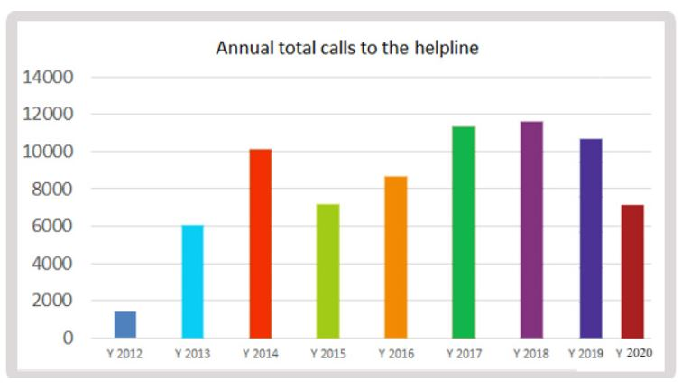

CONTACT US
Organ Donation Toll-Free Help Line - 1800 103 7100 has been functioning from 2012 onwards. The objective of this helpline is to provide service which offers information, support, guidance and referral for all those concerned with any aspect of organ donation and transplantation.
We have been able to provide this service to the public in eight languages-
• English
• Hindi
• Telugu
• Tamil
• Kannada
• Malayalam
• Marathi
• Oriya
On an average we answer about 1000 calls a month. Share our Organ Donation Toll Free Helpline 18001037100 with your family, friends, colleagues, employees such that it reaches to the needy patients and they can contact us for more information.
Nearly 50% calls received by the helpline are in Hindi and Marathi language. 25% callers speak in English. The helpline gets more than 70% of calls during office hours.
A snapshot of the call distribution is given below-
Statistics of Annual Total calls to the helpline-
